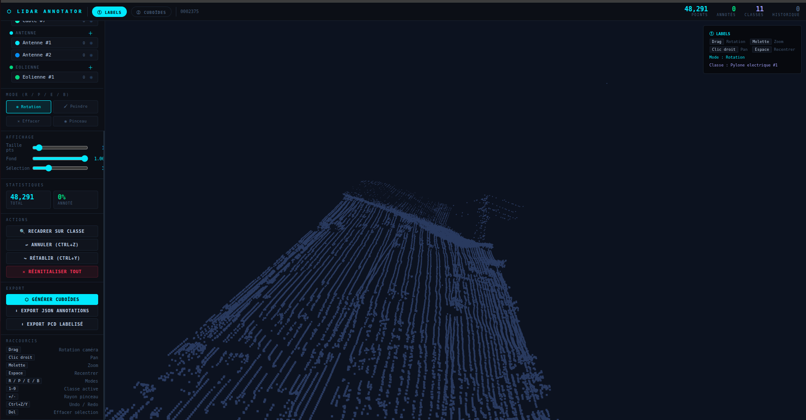
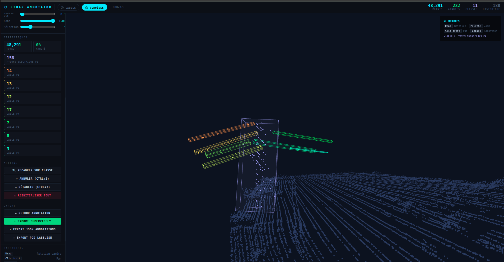
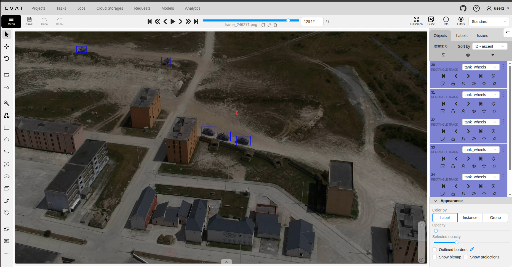

Annotation 3D de câbles et pylônes électriques - pipeline IA pour le vol à basse altitude

CESI| Phase | S1 | S2 | S3 | S4 | S5 | S6 | S7 | S8 | S9 | S10 | S11 | S12 | Jalons |
|---|---|---|---|---|---|---|---|---|---|---|---|---|---|
| FormationThéorie capteurs, intégration hélico | Montée en compétence | ||||||||||||
| Comparaison outils d'annotationCVAT, FiftyOne, Open3D… | Rapport comparatif | ||||||||||||
| Annotation données vidéoS3 → S5 · tâche principale | Dataset vidéo livré | ||||||||||||
| ↳ AnnotationVéhicules militaires | |||||||||||||
| ↳ Validation & correctionContrôle qualité dataset | |||||||||||||
| Annotation LiDARS6 → S11 · tâche principale | Dataset LiDAR en cours | ||||||||||||
| ↳ Essais avec CVATCâbles & pylônes - 1ers essais | Limites CVAT identifiées | ||||||||||||
| ↳ Règles géométriques PythonRANSAC - résultats insuffisants | Adaptation → outil développé | ||||||||||||
| ↳ Développement d'un outil dédiéPipeline extraction → annotation → export | Outil opérationnel | ||||||||||||
| ↳ Perfectionnement & annotationTests terrain → corrections continues | Actuel | ||||||||||||
| Entraînement modèle IASur dataset annoté constitué | Modèle IA |



| Objectif initial | Résultat obtenu | Écart & analyse |
|---|---|---|
| Comparaison outils annotation LiDAR | ✓ Atteint Rapport comparatif livré S2 - CVAT retenu sur critères objectifs | Aucun écart. Livrable validé par l'équipe ETRV dans les délais. |
| Annotation données vidéo - véhicules militaires | ✓ Atteint + dépassé Dataset annoté + correction dataset existant → modèle fonctionnel | Dataset initial mal annoté - biais corrigé. Valeur ajoutée décisive pour la démo armée. |
| Annotation LiDAR avec CVAT | ⟳ Adapté CVAT abandonné - Outil développé sur mesure, qualité supérieure | Conversion PCD chronophage + interface inadaptée → développement d'un outil dédié. |
| Constituer un dataset LiDAR exploitable | ⟳ En cours - S11 Dataset en constitution via Outil personnalisé | 3 semaines de dev outil. Compromis assumé pour meilleure qualité finale. |
| Entraînement modèle IA | → S11 - S12 Modèle vidéo opérationnel - démo armée réussie. LiDAR S12. | Objectif vidéo atteint. LiDAR conditionné au volume final du dataset. |